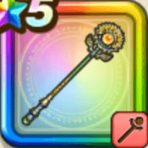

サマーメモリー
攻略班 9.0点 / ラリホーシャナクザオラルチアフルマジックバリア夏の渚のベホマラーかいふく魔力ブーストいきなりまもりのたて
くわしい特徴
【レベル別習得スキル】 Lv1【大神官】さいだいMP+10 Lv1ラリホー（消費MP：10）敵1体を眠りにさそう Lv10シャナク（消費MP：10）仲間ひとりの呪いをとく Lv15ザオラル（消費MP：25）仲間ひとりをHP50%で復活させる Lv20チアフルマジックバリア（消費MP：40）仲間全員の呪文耐性を上げ、たまにかなり上げる。まれに追加で受けた呪文を1回だけ跳ね返す効果を付与する Lv30夏の渚のベホマラー（消費MP：63）渚で夢のようなひと時を過ごし、呪文で仲間全員のHPを回復する。追加でふきとばされた仲間を呼び戻し魅了をなおす Lv35戦闘終了時にMPを10回復する Lv40さいだいMP+12 Lv45かいふく魔力+12 Lv50かいふく魔力ブースト（消費MP：最大MPの1%）戦闘開始時に最大MPに対して減ったMPの分だけかいふく魔力を上げる効果を付与する(効果6ターン) Lv50いきなりまもりのたて（消費MP：武器毎に異なる）戦闘開始時に悪い状態変化とすべての状態異常をふせぐ加護が自動で宿る(効果ターンは武器毎に異なる) 【限界突破スキル】 1凸じゅもんHP回復効果+5% 2凸戦闘終了時にMPを2回復する 3凸じゅもんHP回復効果+5% 4凸戦闘終了時にMPを2回復する